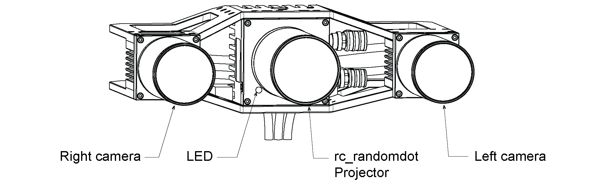
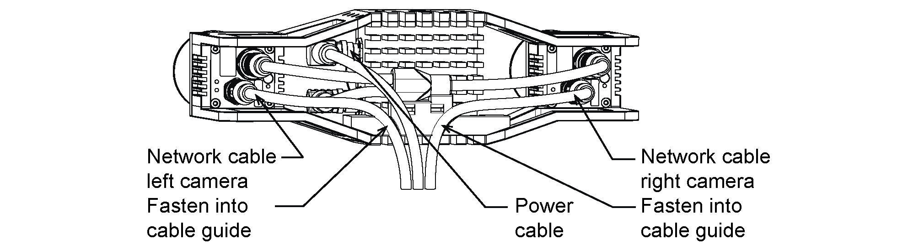
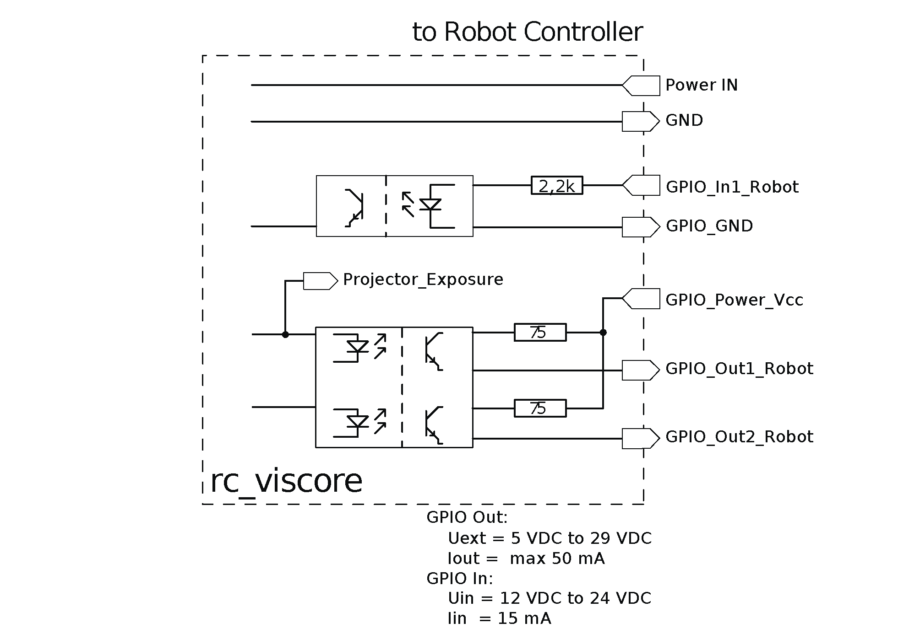
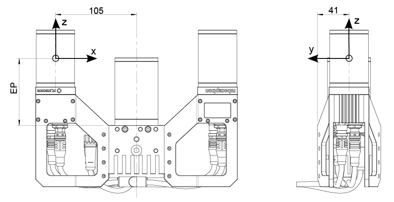

Hardware specification¶
Note
The following hardware specifications are provided here as a general reference; differences with the product may exist.
Scope of delivery¶
Standard delivery for the rc_viscore stereo camera includes
- rc_viscore stereo camera,
- Calibration grid large (A3),
- 2 x 10 m gigabit Ethernet network cables,
- 10 m power cable with M12 connector and one open end,
- Quickstart guide.
The full manual is online available in digital form at https://doc.rc-viscore.com.
Note
The following items are not included in the delivery unless otherwise specified:
- Couplings, adapters, mounts,
- Power supply unit and fuses.
Please refer to Accessories for suggested cables.
The following picture shows the important parts of the rc_viscore stereo camera which are referenced later in the documentation.


Fig. 2 Parts description
Technical specification¶
The rc_viscore stereo camera is available with two image resolutions, 12MP and 5MP, each with three different focal lengths. The 12MP variants are available with standard optics for commercial use or with ruggedized optics for industrial use. The 5MP variants are available with ruggedized optics. The technical specifications of the 12MP variants are shown in Table 1, and the technical specifications of the 5MP variants are shown in Table 2. The given depth image frame rates and latencies were measured for stereo matching using Semi-Global Matching (SGM®) on a computer with an Nvidia RTX PRO 2000 Blackwell GPU and an Intel Core i7 CPU of the 14th generation, with the latencies measured in single shot mode. On other hardware, frame rates and latencies may differ.
| 12 mm | 16 mm | 25 mm | |
|---|---|---|---|
| Model (type) | rc_viscore 210[m/c]-[12/16/25]-12M-H1-R (standard optics)rc_viscore 210[m/c]-[12/16/25]-12M-H1-V (ruggedized optics) |
||
| Image resolution | 4112 x 3008 pixels | ||
| Sensor type | Monochrome or color, global shutter | ||
| Framerate | 9 Hz | ||
| Field of view | Horizontal: 59°
Vertical: 45°
|
Horizontal: 46°
Vertical: 34°
|
Horizontal: 30°
Vertical: 22°
|
Workspace
@ 1.0 m
@ 2.0 m
@ 3.0 m
@ 4.0 m
|
940 mm x 840 mm
2090 mm x 1680 mm
3250 mm x 2530 mm
4400 mm x 3370 mm
|
640 mm x 620 mm
1490 mm x 1240 mm
2340 mm x 1870 mm
3200 mm x 2490 mm
|
340 mm x 400 mm
890 mm x 800 mm
1440 mm x 1200 mm
1990 mm x 1610 mm
|
| Depth image | 4112 x 3008 pixel (Full) @ 3 Hz, 920 ms latency
2056 x 1504 pixel (High) @ 4.7 Hz, 450 ms latency
1028 x 752 pixel (Medium) @ 9 Hz, 230 ms latency
686 x 502 pixel (Low) @ 9 Hz, 190 ms latency
|
||
| Optics | Standard optics for commercial use or ruggedized optics for industrial use | ||
| Cooling | Passive | ||
| Baseline | 210 mm | ||
| Size (W x L x H) | 262 mm x 202 mm x 82 mm (standard optics)
262 mm x 188 mm x 82 mm (ruggedized optics)
|
||
| Mass | 2.3 kg | ||
| 6 mm | 8 mm | 12 mm | |
|---|---|---|---|
| Model (type) | rc_viscore 210[m/c]-[6/8/12]-5M-H1-A |
||
| Image resolution | 2472 x 2064 pixels | ||
| Sensor type | Monochrome or color, global shutter | ||
| Framerate | 23 Hz | ||
| Field of view | Horizontal: 56°
Vertical: 48°
|
Horizontal: 44°
Vertical: 37°
|
Horizontal: 30°
Vertical: 25°
|
Workspace
@ 1.0 m
@ 2.0 m
@ 3.0 m
@ 4.0 m
|
860 mm x 890 mm
1930 mm x 1790 mm
3010 mm x 2690 mm
4080 mm x 3580 mm
|
600 mm x 680 mm
1420 mm x 1360 mm
2240 mm x 2050 mm
3060 mm x 2730 mm
|
330 mm x 450 mm
880 mm x 910 mm
1430 mm x 1370 mm
1980 mm x 1830 mm
|
| Depth image | 2472 x 2064 pixel (Full) @ 4 Hz, 450 ms latency
1236 x 1032 pixel (High) @ 10 Hz, 210 ms latency
618 x 516 pixel (Medium) @ 23 Hz, 110 ms latency
412 x 344 pixel (Low) @ 23 Hz, 90 ms latency
|
||
| Optics | Ruggedized optics for industrial use | ||
| Cooling | Passive | ||
| Baseline | 210 mm | ||
| Size (W x L x H) | 262 mm x 188 mm x 82 mm | 262 mm x 172 mm x 82 mm | 262 mm x 172 mm x 82 mm |
| Mass | 1.97 kg | ||
The depth image range of the rc_viscore stereo camera depends on the image resolution, the focal length, the depth image quality, the specified maximum depth range and the amount of GPU memory that is dedicated to stereo matching. Depth ranges at closer distance are much smaller than depth ranges at far distances. Table 3 and Table 4 show examples of resulting depth ranges for SGM® stereo matching on the same computer, with the maximum depth range set to a working distance of 1 m, 2 m, 3 m, and 4 m. The depth ranges were determined with 3.4 Gbytes of GPU memory dedicated to stereo matching. This is the amount of GPU memory that the rc_cube uses for stereo matching. Larger depth ranges are possible if more GPU memory is dedicated to stereo matching.
| 12 mm | 16 mm | 25 mm | |
|---|---|---|---|
| Full depth quality | 0.85 m to 1.00 m
1.49 m to 2.00 m
1.99 m to 3.00 m
2.38 m to 4.00 m
|
0.89 m to 1.00 m
1.60 m to 2.00 m
2.18 m to 3.00 m
2.66 m to 4.00 m
|
0.93 m to 1.00 m
1.72 m to 2.00 m
2.41 m to 3.00 m
3.02 m to 4.00 m
|
| High depth quality | 0.52 m to 1.00 m
0.53 m to 2.00 m
0.59 m to 3.00 m
0.62 m to 4.00 m
|
0.52 m to 1.00 m
0.66 m to 2.00 m
0.74 m to 3.00 m
0.79 m to 4.00 m
|
0.60 m to 1.00 m
0.87 m to 2.00 m
1.01 m to 3.00 m
1.11 m to 4.00 m
|
| 6 mm | 8 mm | 12 mm | |
|---|---|---|---|
| Full depth quality | 0.61 m to 1.00 m
0.87 m to 2.00 m
1.02 m to 3.00 m
1.12 m to 4.00 m
|
0.67 m to 1.00 m
1.01 m to 2.00 m
1.21 m to 3.00 m
1.35 m to 4.00 m
|
0.75 m to 1.00 m
1.21 m to 2.00 m
1.51 m to 3.00 m
1.73 m to 4.00 m
|
| High depth quality | 0.52 m to 1.00 m
0.52 m to 2.00 m
0.52 m to 3.00 m
0.52 m to 4.00 m
|
0.52 m to 1.00 m
0.52 m to 2.00 m
0.52 m to 3.00 m
0.52 m to 4.00 m
|
0.52 m to 1.00 m
0.52 m to 2.00 m
0.52 m to 3.00 m
0.52 m to 4.00 m
|
The resolution and accuracy for SGM® stereo matching at different distances are given in Table 5 for the 12MP variants and in Table 6 for the 5MP variants. Each entry gives the values for full and high depth quality as [full | high]. In medium quality, the resolution and accuracy will be about 2 times worse than in high quality.
| distance | 12 mm | 16 mm | 25 mm | |
|---|---|---|---|---|
| Lateral resolution | 1.0 m
2.0 m
3.0 m
4.0 m
|
0.3 | 0.6
0.6 | 1.2
0.9 | 1.8
1.2 | 2.4
|
0.3 | 0.5
0.5 | 0.9
0.7 | 1.3
0.9 | 1.8
|
0.2 | 0.3
0.3 | 0.6
0.5 | 0.9
0.6 | 1.1
|
| Depth resolution | 1.0 m
2.0 m
3.0 m
4.0 m
|
0.1 | 0.2
0.4 | 0.7
0.8 | 1.6
1.4 | 2.8
|
0.1 | 0.2
0.3 | 0.6
0.6 | 1.2
1.1 | 2.1
|
0.1 | 0.1
0.2 | 0.4
0.4 | 0.8
0.7 | 1.3
|
| Average depth accuracy | 1.0 m
2.0 m
3.0 m
4.0 m
|
0.4 | 0.7
1.4 | 2.8
3.1 | 6.2
5.6 | 11.1
|
0.3 | 0.6
1.1 | 2.1
2.4 | 4.7
4.2 | 8.3
|
0.2 | 0.4
0.7 | 1.3
1.5 | 3.0
2.6 | 5.2
|
| distance | 6 mm | 8 mm | 12 mm | |
|---|---|---|---|---|
| Lateral resolution | 1.0 m
2.0 m
3.0 m
4.0 m
|
0.5 | 0.9
0.9 | 1.8
1.4 | 2.7
1.8 | 3.5
|
0.4 | 0.7
0.7 | 1.4
1.1 | 2.1
1.4 | 2.7
|
0.3 | 0.5
0.5 | 1.0
0.7 | 1.4
1.0 | 1.9
|
| Depth resolution | 1.0 m
2.0 m
3.0 m
4.0 m
|
0.2 | 0.3
0.6 | 1.1
1.2 | 2.4
2.1 | 4.2
|
0.2 | 0.3
0.5 | 0.9
1.0 | 1.9
1.7 | 3.3
|
0.1 | 0.2
0.3 | 0.6
0.7 | 1.3
1.1 | 2.2
|
| Average depth accuracy | 1.0 m
2.0 m
3.0 m
4.0 m
|
0.6 | 1.1
2.1 | 4.2
4.7 | 9.4
8.3 | 16.6
|
0.5 | 0.9
1.7 | 3.3
3.7 | 7.3
6.5 | 12.9
|
0.3 | 0.6
1.1 | 2.2
2.5 | 4.9
4.4 | 8.7
|

Fig. 3 Overall dimensions of the rc_viscore stereo camera in millimeters
The length L of the rc_viscore stereo camera depends on the model variant and is given in Table 7.
| Model variant | Focal length | L |
|---|---|---|
| 12MP with standard optics | 12 mm | 202 mm |
| 12MP with standard optics | 16 mm | 202 mm |
| 12MP with standard optics | 25 mm | 202 mm |
| 12MP with ruggedized optics | 12 mm | 188 mm |
| 12MP with ruggedized optics | 16 mm | 188 mm |
| 12MP with ruggedized optics | 25 mm | 188 mm |
| 5MP with ruggedized optics | 6 mm | 188 mm |
| 5MP with ruggedized optics | 8 mm | 172 mm |
| 5MP with ruggedized optics | 12 mm | 172 mm |
CAD models of the rc_viscore stereo camera can be downloaded from https://www.roboception.com/download. The CAD models are provided as-is, with no guarantee of correctness.
Environmental and operating conditions¶
The rc_viscore stereo camera is designed for industrial applications. Always respect the storage, transport, and operating environmental conditions outlined in Table 8.
| rc_viscore stereo camera | |
|---|---|
| Storage/Transport temperature | -20 °C to 60 °C |
| Operating temperature | 0 °C to 45 °C (passive cooling) |
| Relative humidity (non condensing) | 20 % to 80 % |
| Protection class | IP54 |
| Others |
|
The rc_viscore stereo camera is designed for an operating temperature (surrounding environment) of 0 °C to 45 °C and relies on convective (passive) cooling. Unobstructed airflow, especially around the cooling fins, needs to be ensured during use. The rc_viscore stereo camera should only be mounted using the provided mechanical mounting interface, and all parts of the housing must remain uncovered. A free space of at least 10 cm extending in all directions from the housing, and sufficient air exchange with the environment is required to ensure adequate cooling. Cooling fins must be free of dirt and other contamination.
Power-supply specifications¶
The rc_viscore stereo camera needs to be supplied by a DC voltage source. The camera’s standard package does not include a DC power supply. Each rc_viscore stereo camera must be connected to a separate power supply. Connection to domestic grid power is only allowed through a power supply certified as EN55011 Class B.
| Min | Nominal | Max | |
|---|---|---|---|
| Supply voltage | 22.0 V | 24 V | 26.0 V |
| Max power consumption | 48 W | ||
| Overcurrent protection | Supply must be fuse-protected to a maximum of 2 A | ||
| EMC compliance | see Electronical and safety standards | ||
Warning
Exceeding maximum power rating values may lead to damage of the rc_viscore stereo camera, power supply, and connected equipment.
Warning
A separate power supply must power each rc_viscore stereo camera.
Warning
Connection to domestic grid power is allowed through a power supply certified as EN55011 Class B only.
Wiring¶
The rc_viscore stereo camera is delivered with a sync cable already connected between projector and cameras. It is the customer’s responsibility to connect the two provided M12 X-coded network cables to the left and right camera, as well as the power cable with an angled M12 connector to the projector (see Fig. 4). The network cables must be clipped into the cable guide for strain relief. All cables must be secured to the mounting bracket.


Fig. 4 Locations of the electrical connections for the rc_viscore stereo camera
Warning
Due to the voltage drop, the maximum power cable length is limited to 15 m. The supply voltage should be set to the specified 24 V and must not be set above 26 V due to the highly variable current draw of the rc_viscore stereo camera.
Warning
Proper cable management is mandatory. Cabling must always be secured to the rc_viscore stereo camera mount with a strain-relief clamp so that no forces due to cable movements are exerted on the rc_viscore stereo camera’s M12 connectors. Enough slack needs to be provided to allow for full range of movement of the camera without straining the cable. The cable’s minimum bend radius (i.e. \(R_{min} = 15 d\)) needs to be observed.
Pin assignments for the power connector are given in Table 10.
| Pin | Cable Color | Designation | Details |
|---|---|---|---|
| 1 | White | nc | |
| 2 | Brown | Power +24 V | 2 A @ 24 V |
| 3 | Green | GPIO In 1 | 12-24 V, 15 mA max. |
| 4 | Yellow | GPIO GND | |
| 5 | Grey | GPIO Vcc | 5-24 V, 50 mA max. |
| 6 | Pink | GPIO Out 1 | Projector exposure signal |
| 7 | Blue | Power GND | |
| 8 | Red | GPIO Out 2 |
Note
Please note that in hardware revisions prior to 1.1 the pins number 3 and 4 were not connected.
GPIOs are decoupled by photocouplers. GPIO Out 1 by default provides an exposure sync signal with a logic high level for the duration of the image exposure. Pins of unused GPIOs should be left floating. GPIO circuitry and specifications are shown in Fig. 5.


Fig. 5 GPIO circuitry and specifications
Coordinate frames¶
The rc_viscore stereo camera’s coordinate-frame origin is defined as the exit pupil of the left camera lens. This frame is called camera coordinate frame. It is shown in Fig. 6.


Fig. 6 Camera coordinate frame location and orientation
The distance EP of the camera coordinate frame origin depends on the model variant and is given in Table 11.
| Model variant | Focal length | EP |
|---|---|---|
| 12MP with standard optics | 12 mm | 86.5 mm |
| 12MP with standard optics | 16 mm | 80.5 mm |
| 12MP with standard optics | 25 mm | 57.5 mm |
| 12MP with ruggedized optics | 12 mm | 78.5 mm |
| 12MP with ruggedized optics | 16 mm | 76.5 mm |
| 12MP with ruggedized optics | 25 mm | 57 mm |
| 5MP with ruggedized optics | 6 mm | 63.4 mm |
| 5MP with ruggedized optics | 8 mm | 64.9 mm |
| 5MP with ruggedized optics | 12 mm | 56.9 mm |
Note
The correct offset between the camera frame and a robot coordinate frame can be calibrated through hand-eye calibration. See https://doc.rc-cube.com/latest/en/handeye_calibration.html.